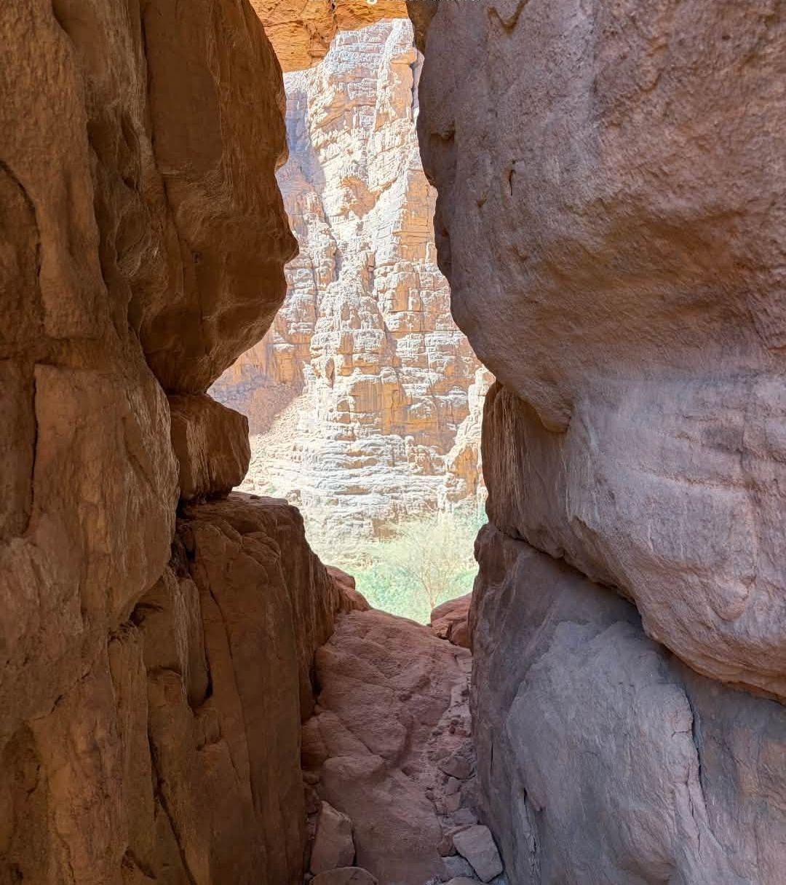
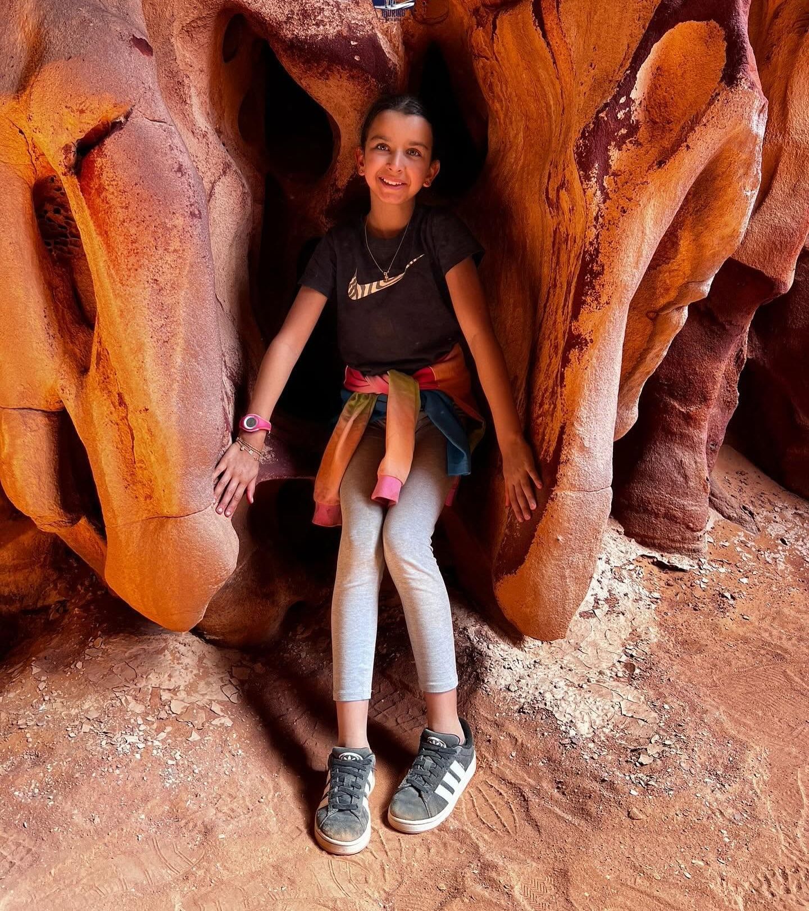

Ihrir et Essendilène
Les sources cachées du Tassili : un lac entre les falaises, des palmiers et le canyon préféré de Mina.
Contenu illustratif, modifiableDurée4 jours, 3 nuits
NiveauFacile
SaisonOctobre à avril
Groupe2 à 10 personnes
Le programme
- Jour 1
Djanet et la palmeraie
Accueil, balade dans la palmeraie, dîner traditionnel.
- Jour 2
Canyon d'Essendilène
Marche dans les gorges jusqu'à la guelta.
- Jour 3
Vallée d'Ihrir
Lac permanent, cases en pierre et baignade.
- Jour 4
Retour
Lever de soleil sur le plateau, retour à Djanet.



Infos pratiques
Visa, vols, saisonFAQ
Toutes les questionsDestinations
Découvrir les lieuxD'autres circuits
Tous les circuits
Tadrart Rouge
Le grand classique : dunes couleur braise, arches de grès et gravures millénaires, jusqu'aux portes de la Libye.
Voir le circuit
Trek du Tassili
Montée à pied sur le plateau, avec des ânes porteurs, jusqu'à la cité de pierre de Sefar.
Voir le circuit
Djanet en famille
Un voyage à hauteur d'enfant : canyons, gravures sous les pieds et glissades dans les dunes.
Voir le circuitVotre voyage à Djanet commence par un message
Dites-nous vos dates et vos envies. Mina vous répond personnellement sous 24 heures.